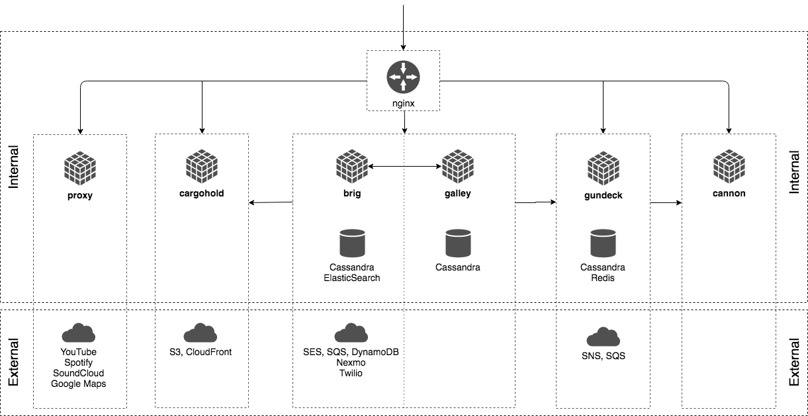

仓库内容
这个仓库包含一下源代码：
services(服务)
- nginz: 反向代理公共API（带有libzauth自定义模块的Nginx）
- galley: 会话和团队
- brig: 账户
- gundeck: 推送通知中心
- cannon: WebSocket推送通知
- cargohold: 资产(图像，文件…)存储
- proxy: 集成第三方API
- restund: 用于音频/视频通话的STUN/TURN服务器
tools(工具)
- api-simulations: 自动化运行冒烟和负载测试
- makedeb: 创建Debian软件包
- bonanza: 转换和转发日志数据
- db/: 迁移工具(例如: 当添加新的表时)
libs(库)
- 共享库
其他
- build: 为某些平台构建脚本和Dockerfiles
- deploy: (正在进行中)-如何在短暂的内存演示模式下运行wire-server
- doc: 文档
架构概述
下图提供了构成Wire Server的组件（部署）体系结构的高级概述，以及组件之间主要的内部和外部依赖关系。

内部组件之间的通信目前没有通过专用认证或加密来保护，并且被假定为局限于专用网络。
Development setup(开发设置)
如何构建wire-server二进制文件
两种方式：
- 本地编译源代码
这需要一系列依赖于您的平台/操作系统的依赖关系，例如：- Haskell 和Rust编译器和包管理器
- 依赖于你的平台/操作系统的一些依赖包(libsodium, openssl, protobuf, icu, geoip, snappy, cryptobox-c,)
查看依赖详情(doc/Dependencies.md)
设置好所有的依赖项后，下面的操作应该是成功的：1
2
3
4build all haskell services
make
build one haskell service, e.g. brig:
cd services/brig && make
默认的make target（fast）编译未优化（编译时间更快，二进制文件更慢），这对于开发目的来说应该没问题。 使用make install获取优化的二进制文件。
对于编译nginz，请看(services/nginz/README.md)
- 使用Docker
如果您不希望从头开始构建所有docker镜像(例如:alpine-builder需要很长时间),可以从此处下载现成的镜像。
如果你希望构建你自己的Docker镜像，你需要docker version >= 17.05和make，然后执行:1
make docker-services
最终，它将构建一系列docker镜像，有关详细信息，请看Makefiles和Dockerfiles，以及build/alpine/README.md
如何运行集成测试
运行集成测试前，要求所有的haskell服务((brig,galley,cannon,gundeck,proxy,cargohold)都已经正确配置并且已启动，然后才能执行例如:brig-integration二进制文件。这要求在体系结构图中看到的大多数部署依赖项也都是可用的：
- 必须的内部依赖项
- cassandra(使用正确的schema)
- elasticsearch(使用正确的schema)
- redis
- 必须的外部依赖项是以下已经配置好的AWS服务(或提供相同API的假的配件)
- SES
- SQS
- SNS
- S3
- Cloudfront
- DynamoDB
使用docker-compose设置这些真实的只是在内存中的内部和”假”的外部依赖是非常容易的。在一个单独的终端中运行以下命令(它将阻塞终端，使用C-c去关闭这些所有的docker镜像):1
deploy/docker-ephemeral/run.sh
然后，运行所有的集成测试:1
make integration
或者，在顶级目录上进行make(生成所有服务的二进制文件)，然后执行例如: cd services/brig && make integration 只运行一个服务的集成测试。
您可以使用$WIRE_STACK_OPTIONS通过Makefiles将参数传递给堆栈，这是很有用的，例如：传递参数到tasty，或者暂时禁用-Werror而不会有意外提交任何内容的风险，如下所示：1
WIRE_STACK_OPTIONS='--ghc-options=-Wwarn --test-arguments="--quickcheck-tests=19919 --quickcheck-replay=651712"' make integration
提示：https://github.com/feuerbach/tasty#runtime
如何使用”假”的外部依赖运行wire-server
看https://github.com/wireapp/wire-server/blob/develop/deploy/services-demo/README.md
如何使用真实的AWS服务运行wire-server
文档，配置和代码尚未完全准备好（请不要打开issue来询问这个问题！）。 有关如何运行有线服务器的更多信息将在不久的将来提供。
作为简要概述，他需要设置:
- 数据库集群(cassandra, redis, elasticsearch)
- 外部依赖
- 有权访问的亚马逊账户
- SES
- SQS
- SNS
- S3
- Cloudfront
- DynamoDB
- Nexmo/Twilio账户(如果你想发送短信)
- Giphy/Google/Spotify/Soundcloud API密钥(如果你希望通过代理这些服务来支持预览)
- TURN服务(如果你希望支持语音/视频通话)
- 有权访问的亚马逊账户
- 所有服务的生产预备环境配置
- 其他基础架构配置(DNS, SSL certificates, metrics, logging, etc)
Roadmap(路线图)
- 部署选项